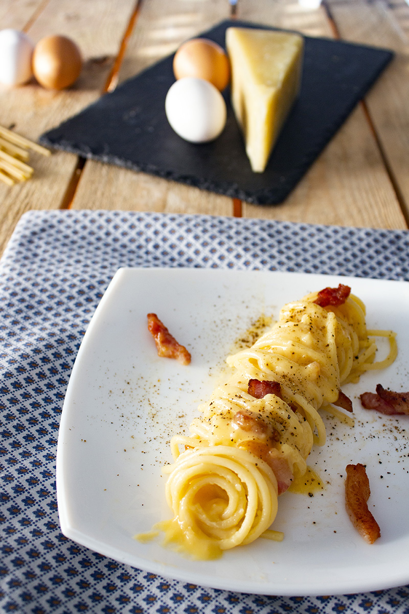

The Authenthic Carbonara Romana

A typical dish from the stunning Eternal City of Roma, appreciated all over the World.
Based on pasta, eggs, guanciale and pecorino cheese is a simple dish, but heavenly good!
The spaghetti secret revealed: Italy has more than 300 different kind of pasta.
Long pasta is made to be cooked in its natural shape as the long tube allows the sauce to stick.
Once placed in the pot, the spaghetti is simply lowered slowly with a fork. Easy!
Ingredients
- Spaghetti
- Guanciale thickly cut - (type of Italian cured pork with a high-quality fat component)
- 2-3 egg yolks
- Pecorino romano cheese
- About 1 tablespoon of pasta cooking water
- Black pepper and salt
Steps
-
First of all, cut the guanciale into squares and place it in the pan,
then place a large pot with water on the stove in order to boil it.
-
At the same time, heat the guanciale in the pan over a gentle heat.
The guanciale should not harden by frying too much, but should soften gently,
releasing all the "fat" it will need to sauté the spaghetti (t will takes about 2 minutes).
In the meantime the water will have come to the boil: throw a bit less than a handful of rock salt
first, then the spaghetti.
- Boiling water for pasta: the correct amount of rock salt is tipically a handful;
in this specific case, as carbonara is particularly salty is recommended to put a pinch less -
- Al dente: to be "al dente" it must first be 100 % Italian pasta than follow
the cooking time on the packet, usually subtracting 1½ to 2 minutes from the cooking time -
-
The way to make the egg yolk cream for a perfect carbonara:
mix the egg yolks with most of the pecorino cheese (leave 1 teaspoon for the seasoning) and pepper.
Add 1 tablespoon of pasta cooking water to avoid an omelette effect.
The cream must be soft, but at the same time full-bodied and velvety.
The colour should be intense and not too pale.
-
Drain the spaghetti "al dente" directly into the hot pan with the guanciale (keeping the cooking water to one side).
Then add 2 - 3 tablespoons of the pasta cooking water. Stir everything together for 1 minute over a high heat.
Finally turn off the heat, remove the pan from the hob and pour the egg yolk cream over the spaghetti.
Stir for a few seconds, add pecorino cheese, 1 - 2 tablespoons of boiling cooking water to promote creaminess and pepper!
- Buon appetito!